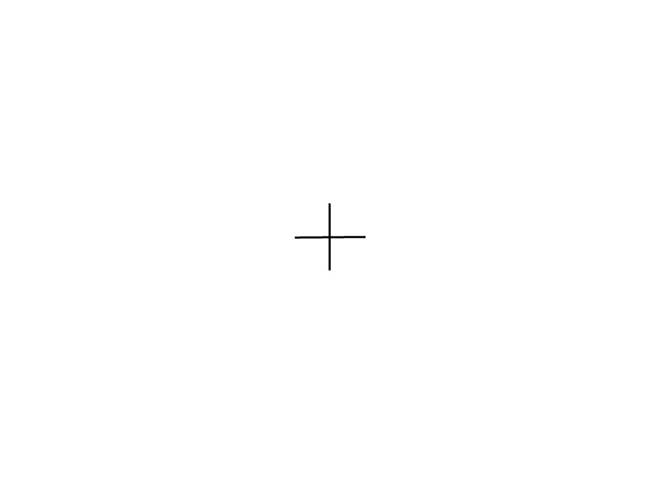
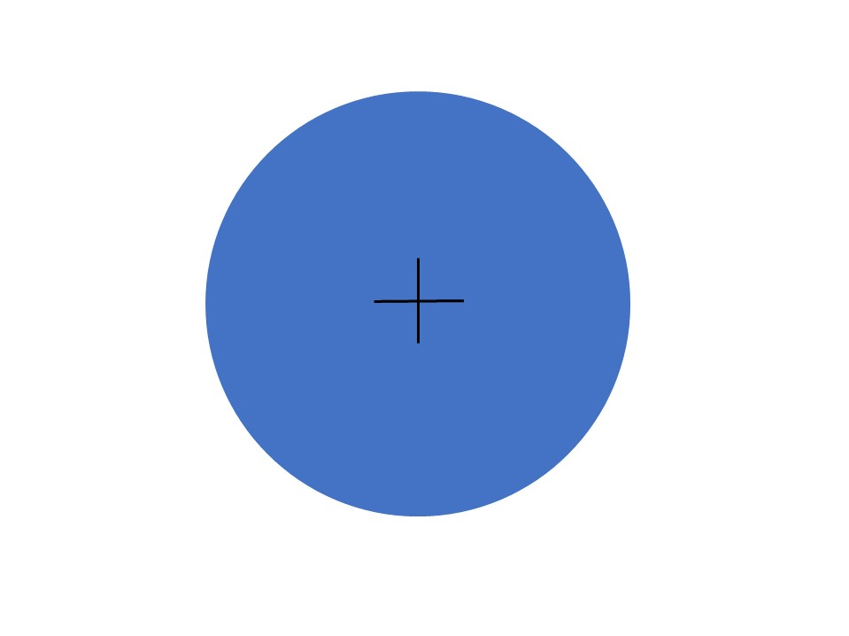
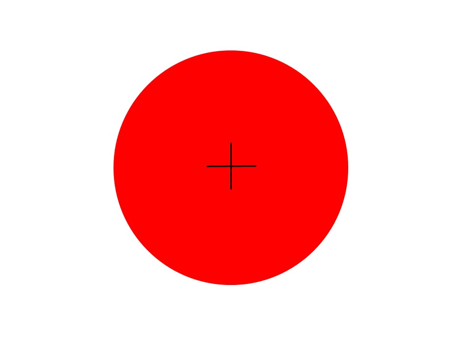

<!DOCTYPE html>
<html>
  <head>
		<title>P300 Experiment</title>
    <script src="jspsych/jspsych.js"></script>
    <script src="jspsych/plugins/jspsych-text.js"></script>
    <script src="jspsych/plugins/jspsych-survey-text.js"></script>
    <link href="jspsych/css/jspsych.css" rel="stylesheet" type="text/css"></link>
    <script src="jspsych/plugins/jspsych-single-stim.js"></script>
    <script src="jspsych/plugins/jspsych-single-audio.js"></script>
	</head>
	<body></body>
  <script>

    // experiment parameters
    var n_trial_per_block = 40;
    var type_order = ['audio', 'visual', 'audio'];

    var timeline = [];

    var welcome = {
      type: "text",
      text: "Welcome to the experiment. Press any key to begin."
    };
    timeline.push(welcome);


    for(var i=0; i<type_order.length; i++){
      if(type_order[i] == 'audio'){

        var instructions = {
          type: "text",
          text: "<p>In this experiment, you will hear either a high frequency tone or a low frequency tone" +
          " through your headset.</p><p>Your task is to count how many times you hear the high pitched tone," +
          "<p>Press any key to begin",
        timing_post_trial: 2000
        };
        timeline.push(instructions);

        var test_stimuli = [
          { stimulus: "audio/1000.wav", data: {test_part: 'test', oddball_type: 'common', block: 1}},
          { stimulus: "audio/2000.wav", data: {test_part: 'test', oddball_type: 'rare', block: 1}}
        ];

        var fixation = {
          type: 'single-stim',
          stimulus: "img/Fixation.jpg",
          timing_response: 133,
          data: {test_part: 'fixation'}
        }

        var test = {
          type: "single-audio",
          stimulus: jsPsych.timelineVariable('stimulus'),
          data: jsPsych.timelineVariable('data'),
          trial_ends_after_audio: true,
          choices: jsPsych.NO_KEYS,
          prompt: '</img>',
          on_finish: function(data){
            data.correct = data.key_press == jsPsych.pluginAPI.convertKeyCharacterToKeyCode(data.correct_response);
          }
        }

        var test_procedure = {
          timeline: [fixation, test],
          timeline_variables: test_stimuli,
          randomize_order: true,
          sample: {type:"with-replacement",size: n_trial_per_block,weights:[8,2]}
        };

        timeline.push(test_procedure);


        var survey_trial = {
          type: 'survey-text',
          questions: ["How many times did you hear the high pitched tone?"],
          rows: [1],
          columns: [1]
        };

        timeline.push(survey_trial);

        var debrief_block = {
          type: "text",
          text: function() {

          var common_trials = jsPsych.data.get().filter({oddball_type: 'common'}).count();
          var rare_trials = jsPsych.data.get().filter({oddball_type: 'rare'}).count();

          return "<p>There were "+common_trials+" low frequency tones.</p><p>There were "+rare_trials+" high frequency tones.<p>Press any key to complete the experiment. Thank you!</p>";
          }
        }

        timeline.push(debrief_block);

        jsPsych.init({
          timeline: timeline,
          preload_audio: ['audio/1000.wav', 'audio/2000.wav'],
          on_finish: function() {
      }

      if(type_order[i] == 'visual'){
        var instructions = {
          type: "text",
          text: "<p>In this experiment, either a red or blue circle with a black plus sign in the center will appear" +
          " on the screen.</p><p>Your task is to count how many of the circles are the color red," +
          "<p>Press any key to begin" +
          "<div style='float: left;'></img>" +
          "<div style='float: right;'></img>",
        timing_post_trial: 2000
        };
        timeline.push(instructions);

        var test_stimuli = [
          { stimulus: "img/Blue.jpg", data: {test_part: 'test', oddball_type: 'common', block: 1}},
          { stimulus: "img/Red.jpg", data: {test_part: 'test', oddball_type: 'rare', block: 1}}
        ];

        var fixation = {
          type: 'single-stim',
          stimulus: "img/Fixation.jpg",
          timing_response: 133,
          data: {test_part: 'fixation'}
        }

        var test = {
          type: "single-stim",
          stimulus: jsPsych.timelineVariable( 'stimulus'),
          data: jsPsych.timelineVariable('data'),
          timing_response: 83,
          on_finish: function(data){
            data.correct = data.key_press == jsPsych.pluginAPI.convertKeyCharacterToKeyCode(data.correct_response);
          }
        }

        var test_procedure = {
          timeline: [fixation, test],
          timeline_variables: test_stimuli,
          randomize_order: true,
          sample: {type:"with-replacement",size: n_trial_per_block,weights:[8,2]}
        };

        timeline.push(test_procedure);


        var survey_trial = {
          type: 'survey-text',
          questions: ["How many circles were red?"],
          rows: [1],
          columns: [1]
        };

        timeline.push(survey_trial);

        var debrief_block = {
          type: "text",
          text: function() {

          var common_trials = jsPsych.data.get().filter({oddball_type: 'common'}).count();
          var rare_trials = jsPsych.data.get().filter({oddball_type: 'rare'}).count();

          return "<p>There were "+common_trials+" blue circles.</p><p>There were "+rare_trials+" red circles.</p>Press any key to complete the experiment. Thank you!</p>";
          }
        }

        timeline.push(debrief_block);

        jsPsych.init({
          timeline: timeline,
          preload_images: ['img/Blue.jpg','img/Red.jpg','img/Fixation.jpg'],
          on_finish: function() {
          }
        });
      </script>
    </html>
